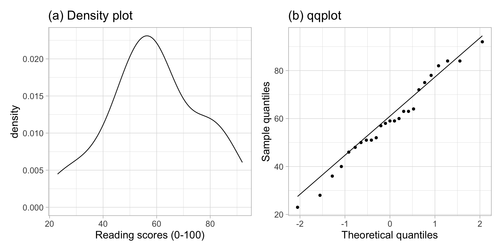

Errors, Power, Effect size, Assumptions
1 Worked example: t-test, effect size, assumptions
You will be using the following dataset: https://uoepsy.github.io/data/students_reading_scores.csv
These contain measurements of age (in years) and reading scores (0 - 100) for 35 university students randomly sampled from a hypothetical university.
Question 1. Read the data into R.
library(tidyverse)
students <- read_csv("https://uoepsy.github.io/data/students_reading_scores.csv")
head(students)# A tibble: 6 × 2
age read_score
<dbl> <dbl>
1 28 84
2 -99 75
3 27 NA
4 29 NA
5 24 52
6 25 23Question 2. Perform preliminary checks on the data by:
- plotting the variables in the dataset;
- computing a table of descriptive statistics.
Plot the variables in the dataset:
library(patchwork)
plt_age <- ggplot(students, aes(x = age)) +
geom_histogram()
plt_read <- ggplot(students, aes(x = read_score)) +
geom_histogram()
plt_age | plt_read
Table of descriptive statistics:
students %>%
pivot_longer(cols = c(age, read_score), names_to = "Variable", values_to = "Values") %>%
group_by(Variable) %>%
summarise(M = mean(Values),
SD = sd(Values),
Min = min(Values),
Med = median(Values),
Max = max(Values),
NMiss = sum(is.na(Values)))# A tibble: 2 × 7
Variable M SD Min Med Max NMiss
<chr> <dbl> <dbl> <dbl> <dbl> <dbl> <int>
1 age -9.49 57.5 -99 24 32 0
2 read_score NA NA NA NA NA 10Question 3. What do you notice? Are there any issues with the data that need fixing? If yes, make appropriate changes to the data to fix those issues.
It looks like some students had their age stored as “-99”. This is an impossible value for age, and it was used by those entering the data as a missing value; i.e. when a student preferred to not disclose that information. The values “-99” should be replaced to be NAs.
The reading scores for some students were also missing but, if you look at the CSV file itself you will see that those were stored as spaces rather than -99s. This is in the CSV file, and not the object created into R when you read the CSV file data into R.
However, R is smart enough that when you read CSV data into R and there are spaces, those are interpreted as missing values and converted to NAs automatically.
Alternative 1:
students$age[students$age == -99] <- NAAlternative 2:
# A tibble: 6 × 2
age read_score
<dbl> <dbl>
1 28 84
2 NA 75
3 27 NA
4 29 NA
5 24 52
6 25 23Plot the variables in the dataset:
library(patchwork)
plt_age <- ggplot(students, aes(x = age)) +
geom_histogram()
plt_read <- ggplot(students, aes(x = read_score)) +
geom_histogram()
plt_age | plt_read
Table of descriptive statistics:
students %>%
pivot_longer(cols = c(age, read_score), names_to = "Variable", values_to = "Values") %>%
group_by(Variable) %>%
summarise(M = mean(Values),
SD = sd(Values),
Min = min(Values),
Med = median(Values),
Max = max(Values),
NMiss = sum(is.na(Values)))# A tibble: 2 × 7
Variable M SD Min Med Max NMiss
<chr> <dbl> <dbl> <dbl> <dbl> <dbl> <int>
1 age NA NA NA NA NA 10
2 read_score NA NA NA NA NA 10The table still has NAs, because when you compute the mean for example, if you add a number to NA, you get NA. For example, 2 + NA = NA.
To tell R to ignore NAs when computing the mean, you say na.rm = TRUE.
students %>%
pivot_longer(cols = c(age, read_score), names_to = "Variable", values_to = "Values") %>%
group_by(Variable) %>%
summarise(M = mean(Values, na.rm = TRUE),
SD = sd(Values, na.rm = TRUE),
Min = min(Values, na.rm = TRUE),
Med = median(Values, na.rm = TRUE),
Max = max(Values, na.rm = TRUE),
NMiss = sum(is.na(Values)))# A tibble: 2 × 7
Variable M SD Min Med Max NMiss
<chr> <dbl> <dbl> <dbl> <dbl> <dbl> <int>
1 age 26.3 3.82 19 26 32 10
2 read_score 59 17.6 23 59 92 10Question 4. We will only be using the reading scores. Remove from the data any rows for which the reading score is missing.
Alternative 1:
# A tibble: 6 × 2
age read_score
<dbl> <dbl>
1 28 84
2 NA 75
3 24 52
4 25 23
5 23 40
6 24 58Alternative 2:
students_tidy <- students %>%
filter(complete.cases(read_score))If you used na.omit(students) or drop_na(), you would remove students having NAs also for age. However, students may not have provided their age, but we can have their reading score, so if we were to do this, we would throw away available data!
Question 5. At the 5% significance level, test whether the sample data provide significance evidence that the mean reading score for all students in that university is not equal to 50.
xbar <- mean(students_tidy$read_score)
xbar[1] 59n <- nrow(students_tidy)
n[1] 25s <- sd(students_tidy$read_score)
s[1] 17.57365se <- s / sqrt(n)
se[1] 3.514731Observed t-statistic
mu0 <- 50
tobs <- (xbar - mu0) / se
tobs[1] 2.560651P-value = 2 * Probability to the right of tobs:
The sample results are significant, so it’s good practice to follow up with a confidence interval
[1] -2.063899 2.063899ci <- xbar + tstar * se
ci[1] 51.74595 66.25405Question 6. The t-test for one population mean relies on some assumptions for the results to be valid. Check whether these are satisfied or not in this sample.
The data come from a random sample of students from that university, hence the independence assumption is satisfied.
The sample size - that is, the number of data points that are not missing - is \(n = 25\). This is not a large enough sample size for the sample mean to be normally distributed, so we will check whether the sample came from a population that follows a normal distribution. If this is the case, then the sample mean would be normally distributed irrespectively of the sample size.
plt1 <- ggplot(students_tidy, aes(x = read_score)) +
geom_density() +
labs(x = "Reading scores (0-100)", title = "(a) Density plot")
plt2 <- ggplot(students_tidy, aes(sample = read_score)) +
geom_qq() +
geom_qq_line() +
labs(x = "Theoretical quantiles", y = "Sample quantiles", title = "(b) qqplot")
plt1 | plt2
The density plot highlights a roughly bell-shaped distribution with a single peak near 60. The qqplot doesn’t highlight any severe departures from normality, in fact the sample quantiles follow the theoretical quantiles from a normal distribution pretty closely.
Alternatively, you can also obtain the qqplot as follows:

We can also perform a Shapiro-Wilk test:
shapiro.test(students_tidy$read_score)
Shapiro-Wilk normality test
data: students_tidy$read_score
W = 0.97792, p-value = 0.8411Question 7. Provide a write up pf your results in the context of the study.
Data were obtained from https://uoepsy.github.io/data/students_reading_scores.csv. The dataset contains measurements on age and reading scores for 35 randomly sampled students from a hypothetical university. Due to random sampling of the students, the independence assumption is satisfied. Some students had missing values for their reading scores, so those students were dropped from the analysis, leaving a sample of 25 students for the analysis. A Shapiro-Wilk normality test was performed at the 5% significance level (\(W = 0.98, p = 0.84\)). The sample data do not provide sufficient evidence to reject the null hypothesis of normality of the population data. Furthermore, the density plot shown in Figure @ref(fig:dist-read-scores) (a) highlights a roughly bell-shaped distribution, and the qqplot in Figure @ref(fig:dist-read-scores) (b) doesn’t show violations from normality.
At the 5% significance level, we performed a hypothesis test against the null hypothesis that the mean reading score of all students in that university was equal to 50. The sample data provide very strong evidence to reject the null hypothesis in favour of the alternative one that the population mean reading score is different from 50: \(t(24) = 2.56, p = 0.02\), two-sided.
We are 95% confident that the mean reading score for all students in that university is between 52 and 66.
Question 8. Is there a significant effect? Is the effect important?
Yes, there is a significant effect, as we found a p-value smaller than the significance level of 5%. However, this is no guarantee that the effect is of practical importance.
To judge whether the effect is important, we need to compute the effect size, i.e. Cohen’s D:
D <- (xbar - mu0) / s
D[1] 0.5121302Cohen’D highlights a medium effect size, highlighting that the sample result is not only significant, but perhaps also of moderate importance and worth noting.
2 Worked example: power
To compute power, you need to know the distribution of the sample mean
- when \(H_0\) is true
- when \(H_1\) is true
This seldom happens in practice, so these exercises will be more conceptual.
Before going ahead, though, remember that if the population has mean \(\mu\) the sampling distribution of the mean is \(N(\mu, \frac{\sigma}{\sqrt n})\), where \(\sigma\) is the population SD and \(n\) the size of a sample.
Suppose you are testing
\[ H_0 : \mu = 0 \\ H_1 : \mu > 0 \]
What is the power of the test if:
- the population has a mean \(\mu = 5\)
- the population has a standard deviation \(\sigma = 3\)
- you will take a sample of size 30
The distribution of the sample mean in the population is
\[\bar X \sim N(5, \frac{3}{\sqrt{30}})\]
If \(H_0\) is true, however, the distribution would be:
\[\bar X \sim N(0, \frac{3}{\sqrt{30}})\]

You would reject the null hypothesis, at the 5% significance level, for values larger the 0.95 quantile of a \(N(0, \frac{3}{\sqrt{30}})\) distribution:
sigma <- 3
n <- 30
SE <- 3 / sqrt(30)tstar <- qnorm(0.95, mean = 0, sd = SE)
tstar[1] 0.9009234
The power is the probability of rejecting the null hypothesis when the null is false.
So, if the null is false, the mean follows the distribution \(N(5, \frac{3}{\sqrt{30}})\). The probability of correctly rejecting the null would be the probability under that distribution beyond -1.07
Pow <- 1 - pnorm(0.90, mean = 5, sd = SE)
Pow[1] 1The power is 1.
Question 9. Assume now that the true population mean is \(\mu = 2\). What is the power of the test?

The distribution of the mean when \(H_0\) is false is then
\[\bar X \sim N(2, \frac{3}{\sqrt{30}})\]
We need to compute the probability in a \(N(2, \frac{3}{\sqrt{30}})\) distribution to the right of 0.90.
Pow <- pnorm(0.90, mean = 2, sd = SE, lower.tail = FALSE)
Pow[1] 0.9776951or
Pow <- 1 - pnorm(0.90, mean = 2, sd = SE)
Pow[1] 0.9776951The power, i.e. the probability that the test rejects the null hypothesis when it is false, is 0.98.
Question 10. Assume now that the true population mean is \(\mu = 2\). What is the probability of a Type II error?
The easiest way to compute it is as \(\beta = 1 - \text{Power}\) because \(\text{Power} = 1 - \beta\).
beta <- 1 - Pow
beta[1] 0.02230486The probability of not rejecting the null when it is false is 0.02.
If you want to compute it from scratch you can compute it as the probability to the left of 0.90. This is because values below 0.90 lead to not rejecting the null hypothesis.
beta <- pnorm(0.90, mean = 2, sd = SE)
beta[1] 0.02230486